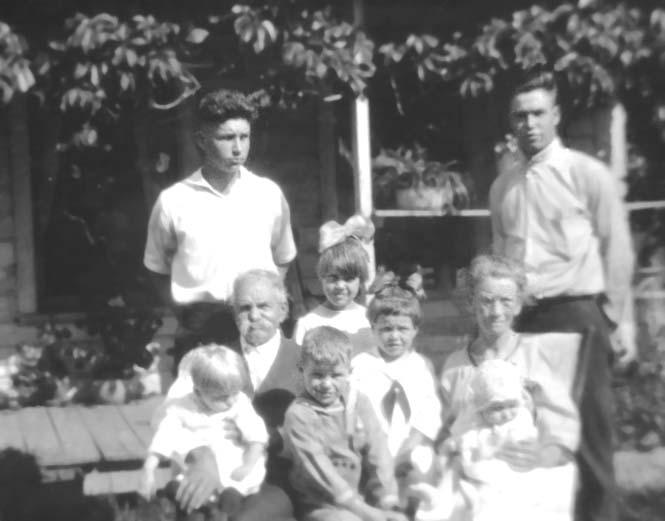

CAMPBELL COUSINS CORRESPONDENCE
 * * * * *
Photo of
Douglas
Whitney (Left)
Dallas
Whitney (Right)
Florence
Mattison (Center)
Wilma
Owlett (Center)
Ralph
Mattison (Center)
Martha
Ann Owlett with Grandpa
Harold
Owlett with Grandma
Taken Summer of 1923
* * * * *
Nelson, Pa.,
October 4, 1923.
Dear Cousins and Sisters:-
Here we are again, greeting
each other in silence,‑ the best we can, with a few friendly
words; if we could only clasp hands and give a "mighty good
shake";‑ but I am very glad we have this privilege of writing
and hope each one will respond this time, for life is too
short and the Cousins are too few to have one drop out.
The summer is nearly gone; with
it we have had many pleasures, also some unpleasant duties;
have not had as much rain as we needed; suppose in other
sections there might have been more than was necessary, but as
we cannot control the weather, we must do the next best thing.
July 5th Andrew
and I went to Potter County with Jennie
and Alta Cady for a three days' trip; had a fine time also a
good roadside lunch.
July 10th Sister Jennie
Bosard and family from Washington, D. C. came to visit
us for a short time; we enjoyed having them very much.
July 14th Cousins Will,
Edith and Doris Selph, and Jennie and Alta Cady had supper
with us; but for a heavy thunder shower coming in sight, their
stay was made short, but they promised to come again
- Report No. 2 - Page 23 -
(Eleanor Campbell
Family)
The children [Burton Owlett, Mac
Owlett, and perhaps Faye OWLETT Whitney-wbt]
who are in the Lake country have visited us this summer,
also sent us plenty of fruit, which was very nice.
Re‑unions were not
forgotten this summer. I attended one at Mansfield, August
9th, the Soldiers Orphans,‑ about one hundred people
present, some boys and girls I had not seen in nearly
fifty years.
Our Campbell Re‑union was
not very largely attended, about seventy and more than
thirty of that number were descendants of our grandfather
and grandmother
Campbell.
Then came the Cousins good
chicken dinner with Cousins Mabel
and Llewellyn; we enjoyed the gathering very much, the
dinner was very good, but Charlie
Congdon's appetite was very poor.
All were much pleased to
have Mrs. Lee Congdon (Cousin
Helen) with us; hope she will be able to come again.
Wish we might have one gathering with every own Cousin
present.
I am very anxious to get
the next report and hope not one will be left out this
time.
A Merry Christmas and Happy
New Year to you all, also a pleasant long winter and the
best of health.
Lovingly,
COUSIN ANN OWLETT.
P. S. I am wondering if I am the only one to keep the Family Tree growing! Well, anyway, I have another granddaughter, arrived a little late to get her photo with the rest,‑ Elva Mae, born September 9, 1923, to Mark and Martha Owlett.
- Report No. 2 - Page 24 -
(Eleanor
Campbell Family)